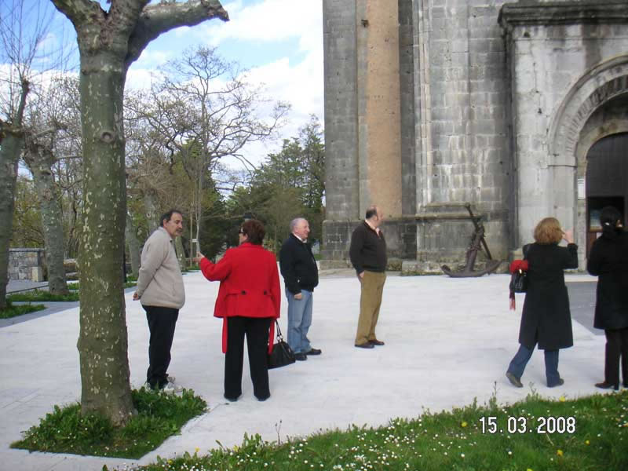

Encuentro en SantoñaAnterior | Inicio | Siguiente |
|
 Ustedes me lo expliquen... Que para hacerse una foto de family tengamos tantos problemas... A saber, Pilar diciéndole a Ana que sobre el acro de la puerta de entrada estaríamos bien; Fernando como que no está por la labor; Manolo mirándola como diciendo "¿pero qué dice éstaaa....?" y Carmina tratando de convencer a Carlos para que sea él (como es el más alto -1,93cm) para que nos encarame... |